As the name suggests, Skitter Bot really likes to get around. Using just a single motor and a DPDT switch wired as an H-bridge, Skitter’s feet shuffle back and forth to move it forward. This is perhaps one of the simplest and most reliable walking-type bots you might ever construct. It is designed to do only one thing, and it does it very well. In spite of having only a single purpose, one nice side effect of its scrub-brush feet is that it’ll sweep your floor wherever it goes.
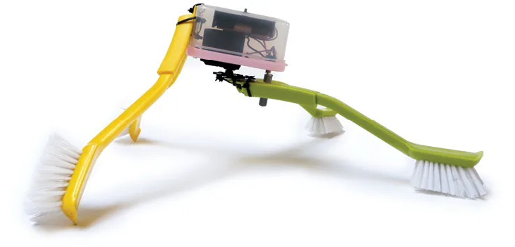
Tools and Supplies
- Continuous-rotation servo motor with the controller removed
- A 3 × AA battery holder
- Three AA batteries
- DPDT toggle switch
- Four scrub brushes (with long handles)
- Small plastic container (mine is 3½ × 2½ × 2 inches)
- BIC Round Stic pen
- A 1½ × 3/8-inch corner brace
- Drill
- 1/4-inch and 1/8-inch drill bits
- Wire stripper
- Cutting pliers
- Box cutter
- Hot glue
- An assortment of zip ties
Skitter Overview
To build Skitter, you’ll first modify a continuous-rotation servo for direct drive by removing its controller board (Chapter 4) or use one of the geared motor alternatives, as outlined in Appendix A. The next step is to attach two scrub brushes to the rear of the servo motor. You’ll then mount the motor itself onto the lid of a plastic container. After that, you’ll attach the battery to the plastic container itself and attach the remaining two scrub brushes to the front. You’ll then fasten the DPDT switch to the lid and then wire the switch in an H-bridge configuration to complete the circuit. You’ll extend the switch’s lever with a tube from a pen so it can make contact with the oscillating scrub brushes. Finally, you’ll insert the batteries and snap the lid shut to make the bot go.
Constructing Skitter
Step 1. Drill a 1/8-inch hole in each of the four ends of the servo horn.
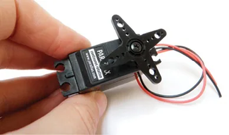
Step 2. Choose two adjacent holes that you made in the servo horn and pass a zip tie down through each. Next, pass the zip ties through the two adjacent centermost holes in the corner brace. Then, pass the zip ties through the hanging holes in two of the brush handles. Finally, zip-tie everything firmly together.
Step 3. Use the two free holes in the corner brace as a guide for drilling downward through each of the brushes.
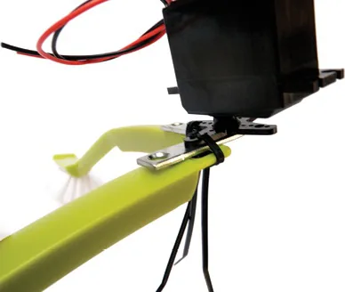
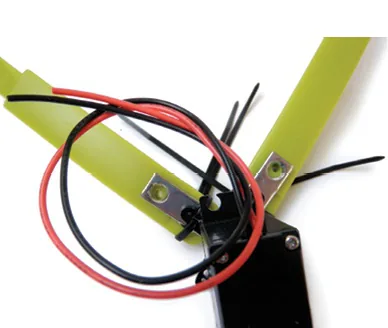
Step 4. Securely zip-tie the brushes to the corner brace using the holes you just drilled. For extra support, zip-tie the brush handle hanging holes to the unused back holes of the servo horn.
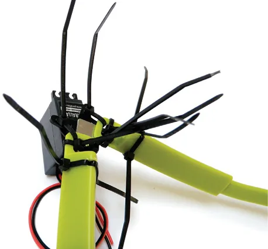
Step 5. Center the backside of your servo near one of the short edges of the plastic container lid. Trace the outline of the back of the servo and then cut out the shape with a box cutter. Finally, pass the motor wires through the hole and slide the plastic container lid down over the servo.
Step 6. Drill 1/8-inch holes in the plastic container lid that line up with the servo’s mounting holes.
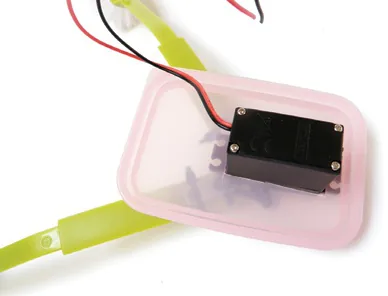
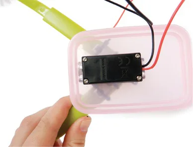
Step 7. Zip-tie the motor firmly in place, and trim away the excess.
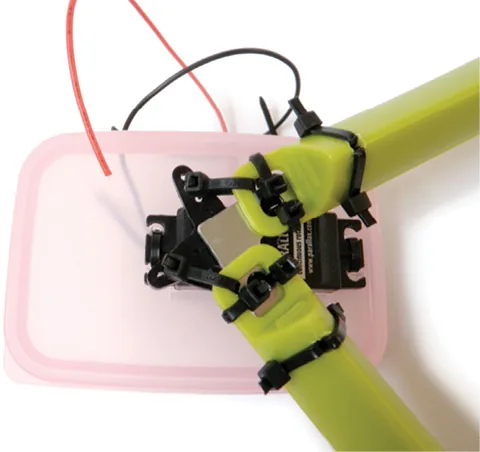
Step 8. Center the battery holder over the underside of the plastic container and use the holder’s mounting holes as a drill guide. Drill two 1/8-inch holes.
Step 9. Place the battery holder inside the plastic container and fasten the two items together using nuts and bolts.
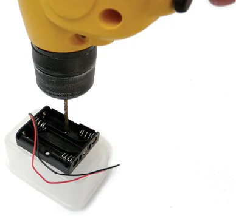
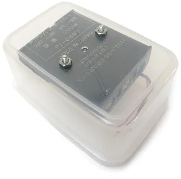
Step 10. For each of the two remaining scrub brushes, measure 1 inch in from the end of the handle and make a mark. Drill a 1/8-inch hole down through the handle where you made this mark.
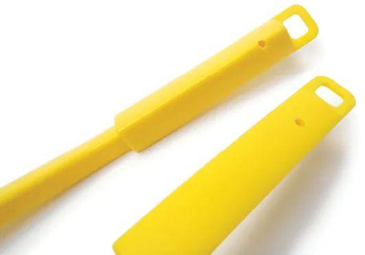
Step 11. Turn the plastic container upside down. Mark, drill, and zip-tie the two remaining scrub brushes to the front of the plastic container such that they meet at a 90º angle and point evenly downward toward the direction of the plastic container opening. In other words, make two even-length front legs for your bot.
Step 12. Drill a ¼-inch centered hole near the short edge of the plastic container lid opposite the servo motor.
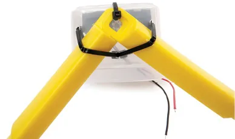
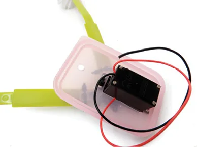
Step 13. Pass the DPDT switch through the hole so that the shaft is pointing at the scrub-brush legs, and then fasten the switch on with a nut.
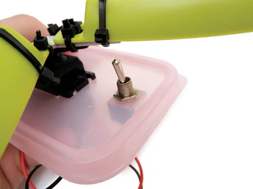
Step 14. Wire together the opposite corners of the DPDT switch. Solder the red battery wire to one of the center DPDT switch pins and the black battery wire to the other.
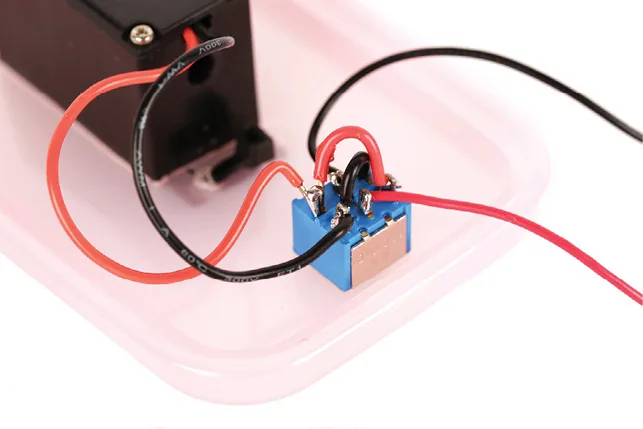
Turn the switch so that there are only two pins facing you (as opposed to three). Solder the black motor wire to the DPDT pin closest to you on the right. Solder the red motor wire to the other pin on the left.
Step 15. Take apart the BIC pen and cut about 1½ inches from the end of the pen tube to use it as an extender for the switch’s lever.
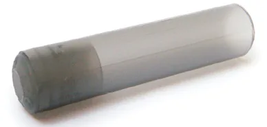
Step 16. Make certain the switch is positioned between the two scrub brushes. Fill the pen cap with hot glue and, using pliers, quickly slide it onto the switch’s shaft. Hold the hot tube in place until it begins to set. Be careful not to push it on too far; otherwise, you could get hot glue inside the switch, which could prevent it from working.
Step 17. Put some batteries into the holder, and the legs will start to move.
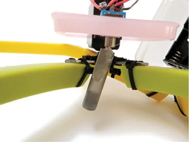
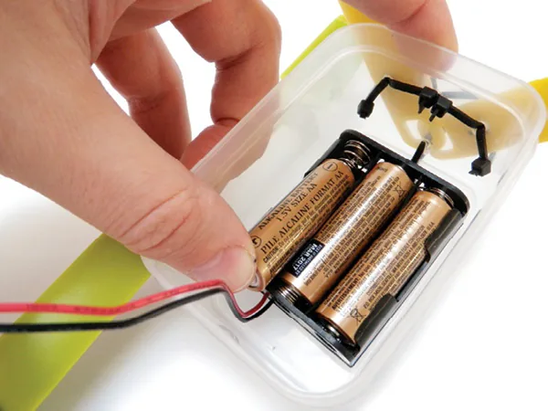
Step 18. Quickly close the plastic container and let the bot go free.
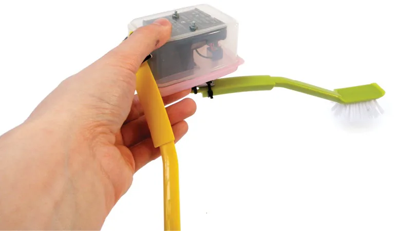